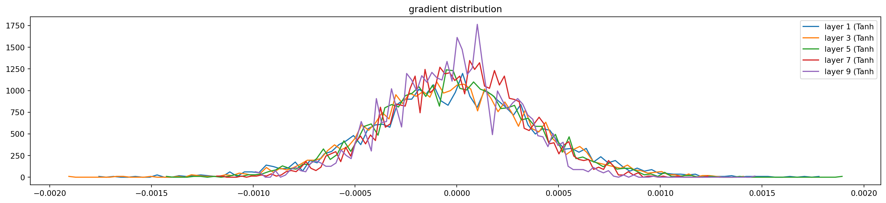

This is my study notes / codes along with Andrej Karpathy’s “Neural Networks: Zero to Hero” series.
We want to stay a bit longer with the MLPs, to have more concrete intuitive of the activations in the neural nets and gradients that flowing backwards. It’s good to learn about the development history of these architectures. Since Recurrent Neural Network (RNN), they are although very expressive but not easily optimizable with current gradient techniques we have so far. Let’s get started!
Part 1: intro
starter code
Show the code
['emma', 'olivia', 'ava', 'isabella', 'sophia', 'charlotte', 'mia', 'amelia']Show the code
{1: 'a', 2: 'b', 3: 'c', 4: 'd', 5: 'e', 6: 'f', 7: 'g', 8: 'h', 9: 'i', 10: 'j', 11: 'k', 12: 'l', 13: 'm', 14: 'n', 15: 'o', 16: 'p', 17: 'q', 18: 'r', 19: 's', 20: 't', 21: 'u', 22: 'v', 23: 'w', 24: 'x', 25: 'y', 26: 'z', 0: '.'}
27Show the code
block_size = 3
# build the dataset
def buid_dataset(words):
X, Y = [], []
for w in words:
context = [0] * block_size
for ch in w + '.':
ix = stoi[ch]
X.append(context)
Y.append(ix)
context = context[1:] + [ix]
X = torch.tensor(X)
Y = torch.tensor(Y)
print(X.shape, Y.shape)
return X, Y
import random
random.seed(42)
random.shuffle(words)
n1 = int(0.8 * len(words))
n2 = int(0.9 * len(words))
Xtr, Ytr = buid_dataset(words[:n1]) # 80#
Xdev, Ydev = buid_dataset(words[n1:n2]) # 10%
Xte, Yte = buid_dataset(words[n2:]) # 10%torch.Size([182625, 3]) torch.Size([182625])
torch.Size([22655, 3]) torch.Size([22655])
torch.Size([22866, 3]) torch.Size([22866])Show the code
# MLP revisited
n_emb = 10 # no of dimensions of the embedding space.
n_hidden = 200 # size of the hidden - tanh layer
# Lookup table - 10 dimensional space
g = torch.Generator().manual_seed(2147483647) # for reproductivity
C = torch.randn((vocab_size, n_emb), generator=g)
# Layer 1 - tanh - 300 neurons
W1 = torch.randn((block_size * n_emb, n_hidden), generator=g)
b1 = torch.randn(n_hidden, generator=g)
# Layer 2 - softmax
W2 = torch.randn((n_hidden, vocab_size), generator=g)
b2 = torch.randn(vocab_size, generator=g)
# All params
parameters = [C, W1, b1, W2, b2]
print("No of params: ", sum(p.nelement() for p in parameters))
# Pre-training
for p in parameters:
p.requires_grad = TrueNo of params: 11897Show the code
# Optimization
max_steps = 200_000
batch_size = 32
# Stats holders
lossi = []
# Training on Xtr, Ytr
for i in range(max_steps):
# minibatch construct
ix = torch.randint(0, Xtr.shape[0], (batch_size,))
Xb, Yb = Xtr[ix], Ytr[ix] # batch X, Y
# forward pass:
emb = C[Xb] # embed the characters into vectors
emb_cat = emb.view(emb.shape[0], -1) # concatenate the vectors
h_pre_act = emb_cat @ W1 + b1 # hidden layer pre-activation
h = torch.tanh(h_pre_act) # hidden layer
logits = h @ W2 + b2 # output layer
loss = F.cross_entropy(logits, Yb) # loss function
# backward pass:
for p in parameters:
p.grad = None
loss.backward()
# update
lr = 0.1 if i <= max_steps / 2 else 0.01 # step learning rate decay
for p in parameters:
p.data += - lr * p.grad
# track stats
if i % 10000 == 0: # print once every while
print(f'{i:7d}/{max_steps:7d}: {loss.item():.4f}')
lossi.append(loss.log10().item()) 0/ 200000: 22.5688
10000/ 200000: 2.7538
20000/ 200000: 2.6410
30000/ 200000: 3.3508
40000/ 200000: 2.6809
50000/ 200000: 2.4641
60000/ 200000: 2.2639
70000/ 200000: 2.5854
80000/ 200000: 1.7649
90000/ 200000: 2.7017
100000/ 200000: 2.8685
110000/ 200000: 1.9740
120000/ 200000: 1.9325
130000/ 200000: 2.1085
140000/ 200000: 2.2129
150000/ 200000: 2.0743
160000/ 200000: 2.1366
170000/ 200000: 2.0163
180000/ 200000: 2.0388
190000/ 200000: 2.2144
Show the code
@torch.no_grad() # disables gradient tracking
def split_loss(split: str):
x, y = {
'train': (Xtr, Ytr),
'val': (Xdev, Ydev),
'test': (Xte, Yte)
}[split]
emb = C[x] # (N, block_size, n_emb)
emb_cat = emb.view(emb.shape[0], -1) # concatenate into (N, block_size * n_emb)
h = torch.tanh(emb_cat @ W1 + b1) # (N, n_hidden)
logits = h @ W2 + b2 # (N, vocab_size)
loss = F.cross_entropy(logits, y) # loss function
print(split, loss.item())
split_loss('train')
split_loss('val')train 2.1239709854125977
val 2.1631178855895996Show the code
# sample from the model
g = torch.Generator().manual_seed(2147483647 + 10)
for _ in range(20):
out = []
context = [0] * block_size # initialize with all ...
while True:
# forward pass the neural net
emb = C[torch.tensor([context])] # (1,block_size,n_embd)
h = torch.tanh(emb.view(1, -1) @ W1 + b1)
logits = h @ W2 + b2
probs = F.softmax(logits, dim=1)
# sample from the distribution
ix = torch.multinomial(probs, num_samples=1, generator=g).item()
# shift the context window and track the samples
context = context[1:] + [ix]
out.append(ix)
# if we sample the special '.' token, break
if ix == 0:
break
print(''.join(itos[i] for i in out)) # decode and print the generated wordmohailyna.
ziellend.
rylee.
emman.
endram.
cadelyn.
elin.
shy.
jen.
eden.
cananar.
katelle.
kalin.
shubergini.
jest.
jair.
jelionnie.
cayus.
kaven.
kylynn.Okay so now our network has multiple things wrong at the initialization, let’s list down below. The final code will be presented in the end of part 1, with # 👈 for lines that had been added / modified. The right code cell below re-initializes states at the beginning of network’s parameter (in my notebook, it’s rendered linearly!).
Show the code
n_emb = 10 # no of dimensions of the embedding space.
n_hidden = 200 # size of the hidden - tanh layer
# Lookup table - 10 dimensional space
g = torch.Generator().manual_seed(2147483647) # for reproductivity
C = torch.randn((vocab_size, n_emb), generator=g)
# Layer 1 - tanh - 300 neurons
W1 = torch.randn((block_size * n_emb, n_hidden), generator=g)
b1 = torch.randn(n_hidden, generator=g)
# Layer 2 - softmax
W2 = torch.randn((n_hidden, vocab_size), generator=g)
b2 = torch.randn(vocab_size, generator=g)
# All params
parameters = [C, W1, b1, W2, b2]
# Pre-training
for p in parameters:
p.requires_grad = True
# Optimization
max_steps = 200_000
batch_size = 32
# Training on Xtr, Ytr
for i in range(max_steps):
# minibatch construct
ix = torch.randint(0, Xtr.shape[0], (batch_size,))
Xb, Yb = Xtr[ix], Ytr[ix] # batch X, Y
# forward pass:
emb = C[Xb] # embed the characters into vectors
emb_cat = emb.view(emb.shape[0], -1) # concatenate the vectors
h_pre_act = emb_cat @ W1 + b1 # hidden layer pre-activation
h = torch.tanh(h_pre_act) # hidden layer
logits = h @ W2 + b2 # output layer
loss = F.cross_entropy(logits, Yb) # loss function
breakfixing the initial loss
We can see at the step = 0, the loss was 27 and after some ks training loops it decreased to 1 or 2. It extremely high at the begining. In practice, we should give the network somehow the expectation we want when generating a character after some characters (3).
In this case, without training yet, we expect all 27 characters’ possibilities to be equal (1 / 27.0) ~ uniform distribution, so the loss ~ negative log likelihood would be:
It’s far lower than 27, we say that the network is confidently wrong. Andrej demonstrated by another simple 5 elements tensor and showed that the loss is lowest when all elements are equal.
We want the logits to be low entropy as possible (but not equal to 0, which will be showed later), we added multipliers 0.01 to W2, and 0 to b2. We got the loss to be 3.xx at the beginning.
Now re-train the model and we will notice the the lossi will not look like the hookey stick anymore! Morever the final loss on train set and dev set is better!
fixing the saturated tanh
The logits are now okay, the next problem is about the h - the activations of the hidden states! It’s hard to see but in the output of code cell below, there are too many values of 1 and -1 in this tensor.
tensor([[ 0.7559, -0.8701, -0.6948, ..., 0.8672, -1.0000, 1.0000],
[-0.6729, -1.0000, -1.0000, ..., -1.0000, -0.9850, 0.4351],
[-0.9918, 0.9961, -0.9988, ..., 1.0000, -1.0000, -0.9068],
...,
[ 1.0000, -0.9899, 0.9653, ..., 0.8383, -0.9985, -0.9992],
[-1.0000, 0.9928, -1.0000, ..., 0.9969, -0.5765, -1.0000],
[-0.9379, -0.9881, 0.9976, ..., -1.0000, 1.0000, 1.0000]],
grad_fn=<TanhBackward0>)Recall that tanh is activation function that squashing arbitrary numbers to the range [-1:1]. Let’s visualize the distribution of h.
Show the code

Most of them were distributed to the extreme values -1 and 1. Now come to the h_pre_act, we can see a flat-tails distribution from -15 to 15.

Looking back to how we implemented tanh in micrograd (which is mathematically the same with PyTorch), we’re multiplying the forward node’s gradient with (1 - t**2), which t is local tanh. When tanh is near -1 or 1, this is close to 0, we are killing the gradients. We are stopping the backpropagation through this tanh unit.
When the gradients become zero, the previous nodes’ gradients will be vanishing. We call this saturated tanh, this leads to dead neurons ~ always off and because the gradient is zero then they will never be turned on, and happens for other activations as well: sigmoid, ReLU, etc (but less significant on Leaky ReLU or ELU). The network is not learning!
The same with logits, now we want h to be more near zero, we add multipliers to the W1 and b1:
We can see now less peak distribution of h:

tanh
tanhcalculating the init scale: “Kaiming init”
Now let’s look to the number 0.02, in practice no one will set it manually. Let’s look into the example below to see how parameters of Gaussian Distribution of y differ from x when multiplying by W.
The question is how we set the W to preserve the Gaussian Distribution of X. Emperical researches found out that the multiplier to W should be square root of the “fan in”, in this case is 10^0.5.
Show the code
x = torch.randn(1000, 10)
W = torch.randn(10, 200)
y = x @ W
W1 = torch.randn(10, 200) / 10**0.5
y1 = x @ W1
print(x.mean(), x.std())
print(y.mean(), y.std())
print(y1.mean(), y1.std())
plt.figure(figsize=(20,5))
plt.subplot(131).set_title("Input X")
plt.hist(x.view(-1).tolist(), 50, density=True);
plt.subplot(132).set_title("Initial output y, expanded by W")
plt.hist(y.view(-1).tolist(), 50, density=True);
plt.subplot(133).set_title("y1, preserve the X's Gaussian Dist")
plt.hist(y1.view(-1).tolist(), 50, density=True);tensor(0.0080) tensor(1.0104)
tensor(-0.0133) tensor(3.2105)
tensor(0.0006) tensor(1.0171)
Please investigate more here:
- Kaiming et al. paper: https://arxiv.org/abs/1502.01852
- Implementation in
Pytorch: https://pytorch.org/docs/stable/nn.init.html#torch.nn.init.kaiming_normal_
It’s recommended in Kaiming paper to use a gain multiplier base on nonlinearity/activation function (here), for tanh it’s 5/3. We endup modified the initialization of W1 with:
A comment in his video explain why 5/3 is recommended, it comes from the avg of \([\tanh(x)]^2\) where \(x\) is distributed as a Gaussian:
\(\int_{-\infty}^{\infty} \frac{[\tanh(x)]^2 \exp(-\frac{x^2}{2})}{\sqrt{2\pi}} \, dx \approx 0.39\)
The square root of this value is how much the tanh squeezes the variance of the incoming variable: 0.39 ** .5 ~= 0.63 ~= 3/5 (hence 5/3 is just an approximation of the exact gain).
In this case is roughly 0.3, re-train and although the loss only improved so insignificant (because previously we set it to be 0.2 - very close), but we’ve parameterized this hyper-constant.
batch normalization
As discussed before, we dont want the h_pre_act to be way too small (~is not doing anything) or too large (~saturated), we want it to just roughly follow the standardized Gaussian Distribution (ie. mean equal to 0, std equal to 1).
We’ve done it at the initialization, why don’t we just normalize the hidden states to be unit Gaussian? in batch normalization, this can be achieved by 4 steps, demonstrated with our case:
Show the code
# 1. mini-batch mean
hpa_mean = h_pre_act.mean(0, keepdim=True)
# 2. mini-batch variance / standard deviation
hpa_std = h_pre_act.std(0, keepdim=True)
# 3. normalize
h_pre_act = (h_pre_act - hpa_mean) / hpa_std
# 4. scale and shift
# multiply by a "gain" then "shift" it with a bias
bngain = torch.ones((1, n_hidden))
bnbias = torch.zeros((1, n_hidden))
h_pre_act = bngain * h_pre_act + bnbiasWe modified our code accordingly and re-run the code, actually this time the model did not improve much. Because actually this is very simple and shallow neural network. We also notice that the training loop now is slower than before, because the calculation volumn is bigger. Batch Normalization also unexpectedly comes up with a side effect, the forward and backward pass of any input now also depend on the mini-batch, not just itself (because of mean()/std()). This effect is suprisingly a good thing and acts as a regularizer.
There are also non-coupling regularizers such as: Linear Normalization, Layer Normalization, Group Normalization.
One othering to consider is in the deployment/testing phase, we dont want to use the batch norm calculated by a mini-batch. Instead we want to use the mean and standard deviation from the whole training data set:
Show the code
# calibrate the batch norm after training
with torch.no_grad():
# pass the training set through
emb = C[x_train]
embcat = emb.view(-1, emb.shape[1] * emb.shape[2])
hpreact = embcat @ W1 + b1
# measure the mean/std over the entire training set
bnmean = hpreact.mean(0, keepdim=True)
bnstd = hpreact.std(0, keepdim=True)Rather, we can also use the running mean and standard deviation as implemented below which will give close estimates. Remaining 2 notes on the BN are:
- Dividing zeros: we add a \(\epsilon\) value to the variance to avoid. We do not include this here as it likely not to happen with out example;
- The bias
b1will be subtracting in BN calculation, we will notice theb1.gradwill be zeros as it does not impact any other calculation. Thus when using the BN, for layer before like weight, we should remove the bias. Thebnbiasnow will be incharge for biasing the distributions.
real example: resnet50 walkthrough
The code AK presented here: https://github.com/pytorch/vision/blob/main/torchvision/models/resnet.py#L108

summary of the lecture
Understand the activations (non-linearity) and gradients is crucial when training deep / large neural networks, in part 1 we have observed some issue and come up with many solutions:
- Confidently wrong of network at init leads to hookey stick for loss in training loop: adding multipliers to
logits’s weights and biases; - Flat-tails distribution or saturated
tanh: Kaiming init; - Normalization of the hidden states: introduction to BN.
Our final code in part 1 (un-fold to see), # 👈 indicates a change:
Show the code
block_size = 3
# MLP revisited
n_emb = 10 # no of dimensions of the embedding space.
n_hidden = 200 # size of the hidden - tanh layer
# Lookup table - 10 dimensional space
g = torch.Generator().manual_seed(2147483647) # for reproductivity
C = torch.randn((vocab_size, n_emb), generator=g)
# Layer 1 - tanh - 300 neurons
W1 = torch.randn((block_size * n_emb, n_hidden), generator=g) * (5/3) / ((block_size * n_emb)**0.5) # * 0.2 # 👈
# b1 = torch.randn(n_hidden, generator=g) * 0.01 # 👈
# Layer 2 - softmax
W2 = torch.randn((n_hidden, vocab_size), generator=g) * 0.01 # 👈
b2 = torch.randn(vocab_size, generator=g) * 0 # 👈
# Batch Normalization gain and bias
bngain = torch.ones((1, n_hidden)) # 👈
bnbias = torch.zeros((1, n_hidden)) # 👈
# Add running mean/std
bnmean_running = torch.zeros((1, n_hidden)) # 👈
bnstd_running = torch.ones((1, n_hidden)) # 👈
# All params (deleted b1)
parameters = [C, W1, W2, b2, bngain, bnbias] # 👈
print("No of params: ", sum(p.nelement() for p in parameters))
# Pre-training
for p in parameters:
p.requires_grad = True
# Optimization
max_steps = 200_000
batch_size = 32
# Stats holders
lossi = []
# Training on Xtr, Ytr
for i in range(max_steps):
# minibatch construct
ix = torch.randint(0, Xtr.shape[0], (batch_size,))
Xb, Yb = Xtr[ix], Ytr[ix] # batch X, Y
# forward pass:
emb = C[Xb] # embed the characters into vectors
emb_cat = emb.view(emb.shape[0], -1) # concatenate the vectors
# Linear layer
h_pre_act = emb_cat @ W1 # + b1 # hidden layer pre-activation # 👈
# BatchNorm layer
bnmeani = h_pre_act.mean(0, keepdim=True) # 👈
bnstdi = h_pre_act.std(0, keepdim=True) # 👈
h_pre_act = bngain * ((h_pre_act - bnmeani) / bnstdi) + bnbias # 👈
# Updating running mean and std (this runs outside the training loop)
with torch.no_grad(): # 👈
bnmean_running = 0.999 * bnmean_running + 0.001 * bnmeani # 👈
bnstd_running = 0.999 * bnstd_running + 0.001 * bnstdi # 👈
# Non-linearity
h = torch.tanh(h_pre_act) # hidden layer
logits = h @ W2 + b2 # output layer
loss = F.cross_entropy(logits, Yb) # loss function
# backward pass:
for p in parameters:
p.grad = None
loss.backward()
# update
lr = 0.1 if i <= max_steps / 2 else 0.01 # step learning rate decay
for p in parameters:
p.data += - lr * p.grad
# track stats
if i % 10000 == 0: # print once every while
print(f'{i:7d}/{max_steps:7d}: {loss.item():.4f}')
lossi.append(loss.log10().item())No of params: 12097
0/ 200000: 3.3031
10000/ 200000: 2.4783
20000/ 200000: 2.3003
30000/ 200000: 2.5730
40000/ 200000: 2.3532
50000/ 200000: 2.1143
60000/ 200000: 2.2300
70000/ 200000: 2.0125
80000/ 200000: 2.5200
90000/ 200000: 2.2812
100000/ 200000: 1.7421
110000/ 200000: 2.2218
120000/ 200000: 2.1793
130000/ 200000: 2.0851
140000/ 200000: 2.0644
150000/ 200000: 2.1029
160000/ 200000: 2.1774
170000/ 200000: 2.0793
180000/ 200000: 2.1406
190000/ 200000: 1.9880
Show the code
@torch.no_grad() # disables gradient tracking
def split_loss(split: str):
x, y = {
'train': (Xtr, Ytr),
'val': (Xdev, Ydev),
'test': (Xte, Yte)
}[split]
emb = C[x]
emb_cat = emb.view(emb.shape[0], -1)
h_pre_act = emb_cat @ W1 + b1 # 👈
# h_pre_act = bngain * ((h_pre_act - h_pre_act.mean(0, keepdim=True)) / h_pre_act.std(0, keepdim=True)) + bnbias # 👈
# h_pre_act = bngain * ((h_pre_act - bnmean) / bnstd) + bnbias # 👈
h_pre_act = bngain * ((h_pre_act - bnmean_running) / bnstd_running) + bnbias # 👈
h = torch.tanh(h_pre_act)
logits = h @ W2 + b2
loss = F.cross_entropy(logits, y)
print(split, loss.item())
split_loss('train')
split_loss('val')train 2.412395715713501
val 2.441391944885254loss logs
The numbers somehow are approximate, I don’t know why my Thinkpad-E14 gave different results when running codes multiple times 😂.
| Step | What we did | Loss we got (accum) |
|---|---|---|
| 1 | original | train 2.1169614791870117 val 2.1623435020446777 |
| 2 | fixed softmax confidently wrong | train 2.0666463375091553 val 2.1468191146850586 |
| 3 | fixed tanh layer too saturated at init |
train 2.033477544784546 val 2.115907907485962 |
| 4 | used semi principle “kaiming init” instead of hacking init | train 2.038902997970581 val 2.1138899326324463 |
| 5 | added batch norm layer | train 2.0662825107574463 val 2.1201331615448 |
Sample from the model - again
Show the code
# sample from the model
g = torch.Generator().manual_seed(2147483647 + 10)
for _ in range(20):
out = []
context = [0] * block_size # initialize with all ...
while True:
# forward pass the neural net
emb = C[torch.tensor([context])] # (1,block_size,n_embd)
h = torch.tanh(emb.view(1, -1) @ W1)
logits = h @ W2 + b2
probs = F.softmax(logits, dim=1)
# sample from the distribution
ix = torch.multinomial(probs, num_samples=1, generator=g).item()
# shift the context window and track the samples
context = context[1:] + [ix]
out.append(ix)
# if we sample the special '.' token, break
if ix == 0:
break
print(''.join(itos[i] for i in out)) # decode and print the generated wordmohabimyazzizesthl.
fyll.
qthmrcjendra.
grazshaddeliillyssppn.
marissangelsteptzivhouracesshubbrgyviannskylahkinlexpxrthucfoubfkandyshyldus.
maghlayshustlyssshawnnkaylisustzabhl.
jurettc.
brwin.
koeginfaddriqnoorkesghptin.
samalyxthn.
rentlingsiriferd.
dwridaniktabbightengsizviamilbuklvidlivid.
mellyketztliyaxabdurdkesliekh.
kamilvantwad.
bdylh.
vicheyajakenangmikgdrictaviikshrionbyth.
ysnbriangworyggoveth.
khaz.
blok.
mmechernest.Part 2: PyTorch-ifying the code, and train a deeper network
Below is PyTorch-ified code by Andrej, some comment input by me:
Show the code
# Let's train a deeper network
# The classes we create here are the same API as nn.Module in PyTorch
class Linear:
"""
Simplifying Pytorch Linear Layer: https://pytorch.org/docs/stable/generated/torch.nn.Linear.html#torch.nn.Linear
"""
def __init__(self, fan_in, fan_out, bias=True):
self.weight = torch.randn((fan_in, fan_out), generator=g) / fan_in**0.5
self.bias = torch.zeros(fan_out) if bias else None
def __call__(self, x):
self.out = x @ self.weight
if self.bias is not None:
self.out += self.bias
return self.out
def parameters(self):
return [self.weight] + ([] if self.bias is None else [self.bias])
class BatchNorm1d:
"""
Simplifying Pytorch BatchNorm1D: https://pytorch.org/docs/stable/generated/torch.nn.BatchNorm1d.html
"""
def __init__(self, dim, eps=1e-5, momentum=0.1):
self.eps = eps
self.momentum = momentum
self.training = True # to differentiate usage of class in training or evaluation (using running mean/std)
# parameters (trained with backprop)
self.gamma = torch.ones(dim) # gain
self.beta = torch.zeros(dim) # bias
# buffers (trained with a running 'momentum update')
self.running_mean = torch.zeros(dim)
self.running_var = torch.ones(dim)
def __call__(self, x):
# calculate the forward pass
if self.training:
xmean = x.mean(0, keepdim=True) # batch mean
xvar = x.var(0, keepdim=True) # batch variance, follow the paper exactly
else:
xmean = self.running_mean
xvar = self.running_var
xhat = (x - xmean) / torch.sqrt(xvar + self.eps) # normalize to unit variance
self.out = self.gamma * xhat + self.beta # to tracking and visualizing data later on, PyTorch does not have this
# update the buffers
if self.training:
with torch.no_grad():
self.running_mean = (1 - self.momentum) * self.running_mean + self.momentum * xmean
self.running_var = (1 - self.momentum) * self.running_var + self.momentum * xvar
return self.out
def parameters(self):
return [self.gamma, self.beta]
class Tanh:
"""
Just calculate the Tanh, just PyTorch: https://pytorch.org/docs/stable/generated/torch.nn.Tanh.html
"""
def __call__(self, x):
self.out = torch.tanh(x)
return self.out
def parameters(self):
return []
n_embd = 10 # the dimensionality of the character embedding vectors
n_hidden = 100 # the number of neurons in the hidden layer of the MLP
g = torch.Generator().manual_seed(2147483647) # for reproducibility
C = torch.randn((vocab_size, n_embd), generator=g)
layers = [
Linear(n_embd * block_size, n_hidden), Tanh(),
Linear( n_hidden, n_hidden), Tanh(),
Linear( n_hidden, n_hidden), Tanh(),
Linear( n_hidden, n_hidden), Tanh(),
Linear( n_hidden, n_hidden), Tanh(),
Linear( n_hidden, vocab_size),
]
with torch.no_grad():
# last layer: make less confident
layers[-1].weight *= 0.1
# all other layers: apply gain
for layer in layers[:-1]:
if isinstance(layer, Linear):
layer.weight *= 5/3
parameters = [C] + [p for layer in layers for p in layer.parameters()]
print(sum(p.nelement() for p in parameters)) # number of parameters in total
for p in parameters:
p.requires_grad = True46497Show the code
# same optimization as last time
max_steps = 200000
batch_size = 32
lossi = []
ud = []
for i in range(max_steps):
# minibatch construct
ix = torch.randint(0, Xtr.shape[0], (batch_size,), generator=g)
Xb, Yb = Xtr[ix], Ytr[ix] # batch X,Y
# forward pass
emb = C[Xb] # embed the characters into vectors
x = emb.view(emb.shape[0], -1) # concatenate the vectors
for layer in layers:
x = layer(x)
loss = F.cross_entropy(x, Yb) # loss function
# backward pass
for layer in layers:
layer.out.retain_grad() # AFTER_DEBUG: would take out retain_graph
for p in parameters:
p.grad = None
loss.backward()
# update
lr = 0.1 if i < 150000 else 0.01 # step learning rate decay
for p in parameters:
p.data += -lr * p.grad
# track stats
if i % 10000 == 0: # print every once in a while
print(f'{i:7d}/{max_steps:7d}: {loss.item():.4f}')
lossi.append(loss.log10().item())
with torch.no_grad():
ud.append([((lr*p.grad).std() / p.data.std()).log10().item() for p in parameters])
break
# if i >= 1000:
# break # AFTER_DEBUG: would take out obviously to run full optimization 0/ 200000: 3.2962viz #1: forward pass activations statistics
Show the code
# visualize histograms
plt.figure(figsize=(20, 4)) # width and height of the plot
legends = []
for i, layer in enumerate(layers[:-1]): # note: exclude the output layer
if isinstance(layer, Tanh):
t = layer.out
print('layer %d (%10s): mean %+.2f, std %.2f, saturated: %.2f%%' % (i, layer.__class__.__name__, t.mean(), t.std(), (t.abs() > 0.97).float().mean()*100))
hy, hx = torch.histogram(t, density=True)
plt.plot(hx[:-1].detach(), hy.detach())
legends.append(f'layer {i} ({layer.__class__.__name__}')
plt.legend(legends);
plt.title('activation distribution')layer 1 ( Tanh): mean -0.02, std 0.75, saturated: 20.25%
layer 3 ( Tanh): mean -0.00, std 0.69, saturated: 8.38%
layer 5 ( Tanh): mean +0.00, std 0.67, saturated: 6.62%
layer 7 ( Tanh): mean -0.01, std 0.66, saturated: 5.47%
layer 9 ( Tanh): mean -0.02, std 0.66, saturated: 6.12%Text(0.5, 1.0, 'activation distribution')
viz #2: backward pass gradient statistics
Show the code
# visualize histograms
plt.figure(figsize=(20, 4)) # width and height of the plot
legends = []
for i, layer in enumerate(layers[:-1]): # note: exclude the output layer
if isinstance(layer, Tanh):
t = layer.out.grad
print('layer %d (%10s): mean %+f, std %e' % (i, layer.__class__.__name__, t.mean(), t.std()))
hy, hx = torch.histogram(t, density=True)
plt.plot(hx[:-1].detach(), hy.detach())
legends.append(f'layer {i} ({layer.__class__.__name__}')
plt.legend(legends);
plt.title('gradient distribution')layer 1 ( Tanh): mean +0.000010, std 4.205588e-04
layer 3 ( Tanh): mean -0.000003, std 3.991179e-04
layer 5 ( Tanh): mean +0.000003, std 3.743020e-04
layer 7 ( Tanh): mean +0.000015, std 3.290473e-04
layer 9 ( Tanh): mean -0.000014, std 3.054035e-04Text(0.5, 1.0, 'gradient distribution')
the fully linear case of no non-linearities
Training Neural Network is like balancing a pencil on a finger
viz #3: parameter activation and gradient statistics
Show the code
# visualize histograms
plt.figure(figsize=(20, 4)) # width and height of the plot
legends = []
for i,p in enumerate(parameters):
t = p.grad
if p.ndim == 2:
print('weight %10s | mean %+f | std %e | grad:data ratio %e' % (tuple(p.shape), t.mean(), t.std(), t.std() / p.std()))
hy, hx = torch.histogram(t, density=True)
plt.plot(hx[:-1].detach(), hy.detach())
legends.append(f'{i} {tuple(p.shape)}')
plt.legend(legends)
plt.title('weights gradient distribution');weight (27, 10) | mean -0.000031 | std 1.365078e-03 | grad:data ratio 1.364090e-03
weight (30, 100) | mean -0.000049 | std 1.207430e-03 | grad:data ratio 3.871660e-03
weight (100, 100) | mean +0.000016 | std 1.096730e-03 | grad:data ratio 6.601988e-03
weight (100, 100) | mean -0.000010 | std 9.893572e-04 | grad:data ratio 5.893091e-03
weight (100, 100) | mean -0.000011 | std 8.623432e-04 | grad:data ratio 5.158123e-03
weight (100, 100) | mean -0.000004 | std 7.388576e-04 | grad:data ratio 4.415211e-03
weight (100, 27) | mean -0.000000 | std 2.364824e-02 | grad:data ratio 2.328203e+00
viz #4: update: data ratio over time
bringing back batchnorm, looking at the visualizations
summary of the lecture for real this time
Exercises:
- E01: I did not get around to seeing what happens when you initialize all weights and biases to zero. Try this and train the neural net. You might think either that 1) the network trains just fine or 2) the network doesn’t train at all, but actually it is 3) the network trains but only partially, and achieves a pretty bad final performance. Inspect the gradients and activations to figure out what is happening and why the network is only partially training, and what part is being trained exactly.
- E02: BatchNorm, unlike other normalization layers like LayerNorm/GroupNorm etc. has the big advantage that after training, the batchnorm gamma/beta can be “folded into” the weights of the preceeding Linear layers, effectively erasing the need to forward it at test time. Set up a small 3-layer MLP with batchnorms, train the network, then “fold” the batchnorm gamma/beta into the preceeding Linear layer’s W,b by creating a new W2, b2 and erasing the batch norm. Verify that this gives the same forward pass during inference. i.e. we see that the batchnorm is there just for stabilizing the training, and can be thrown out after training is done! pretty cool.
resources:
- other people learn from AK like me: https://bedirtapkan.com/posts/blog_posts/karpathy_3_makemore_activations/; https://skeptric.com/index.html#category=makemore - a replicate (?) with more OOPs on another dataset;
- some good papers recommended by Andrej:
- “Kaiming init” paper: https://arxiv.org/abs/1502.01852;
- BatchNorm paper: https://arxiv.org/abs/1502.03167;
- Bengio et al. 2003 MLP language model paper (pdf): https://www.jmlr.org/papers/volume3/bengio03a/bengio03a.pdf;
- Good paper illustrating some of the problems with batchnorm in practice: https://arxiv.org/abs/2105.07576.